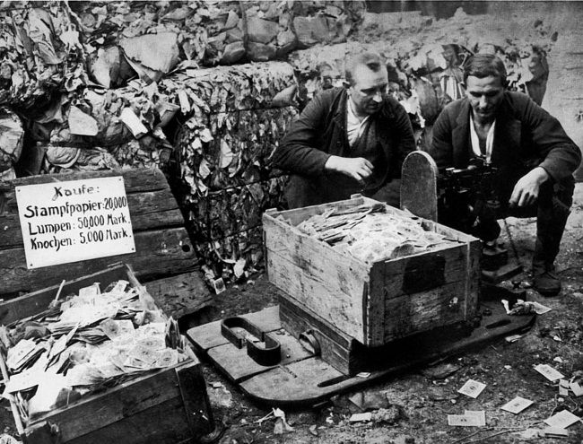

EFTER FÖRSTA VÄRLDSKRIGET
Versaillesfreden var tuff för Tyskland. När Tyskland kapitulerade 1918 trodde de på en mild fred, men det blev det inte. Tyskland fick inte var med och förhandla i fredsavtalet. Om de inte accepterade de allierades krav, skulle landet ockuperas. Kraven var hårda. Inte minst var de tvungna att betala ett enormt krigsskadestånd (132 000 000 000 mark) utan också förlorade Tyskland mark, kolonier och fick ta skulden för att ha startat kriget.

Många tyskar kände sig förråda av den nya regeringen, speciellt de i militären. De började prata om "dolkstöten i ryggen". Ett hat mot den nya regeringen som anses svikit dem när de skrev på fredsavtalet. Dem menade att Tysklands armé var egentligen obesegrad. Men de förlorade kriget på grund av uppror och strejker i hemlandet. Men det dem inte visste var att landet höll på att bryta samman. Om kriget fortsatte skulle armén få ett militärt sammanbrott.
DEN GALOPPERANDE INFLATIONEN
Direkt efter kriget ingick Tyskland i en ekonomisk kris. Lånade pengar för att bekosta kriget skulle betalas tillbaka och såklart hade de ett stort krigsskadestånd. Tysklands regering lät miljontals nya sedlar tyckas för att betala skulderna. Detta ledde till en extrem inflation och den tyska valutan blev mindre och mindre värd för varje timme. Arbetarna var tvungna att snabbt köpa upp sin lön för att få mest utav pengarna. Denna tid kom att kallas för den galopperande inflationens tid.

Så småningom bytte den Tyska regeringen till ett nytt penningsystem. Den tyska ekonomin började att höjas genom omförhandling av krigsskadeståndet och lån från utlandet. Inflationen började att minskas. Alla pengar som sparats på banken var nu värdelösa och många tyskar ansåg att skadan var redan skedd. En misstänksamhet och misstro skulle sedan finnas kvar mot det politiska systemet och politikerna.
Nästa Sida →